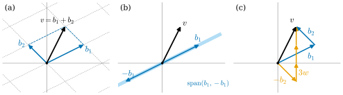

1.1 Vector Spaces and Bases
Goals
- vector space와 subspace의 공리를 확인하고, 주어진 집합이 vector space(subspace)인지 판별할 수 있다.
- span, linearly independent, basis의 뜻을 설명하고, basis가 “모든 벡터를 꼭 한 가지 방식으로 표현하게 해 주는 목록”임을 증명할 수 있다.
- basis를 어떻게 고르든 그 길이가 같다는 사실(dimension의 정의)을 exchange lemma로 증명하는 과정을 따라갈 수 있다.
- basis에 대한 성분을 계산하고, 성분을 위첨자 \(v^i\)로 적는 규약을 안다.
Prerequisites
- 이 절은 study set 전체의 출발점이다. 학부 linear algebra에서 행렬의 곱을 계산하고 연립일차방정식을 가우스 소거법으로 풀어 보았다고 가정한다(Chapter 1 overview의 “Builds on”).
- 증명을 읽는 데 익숙하지 않아도 된다. 이 절의 증명은 한 단계씩 근거를 붙여 쓴다.
Motivation
미분기하의 기본 발상은 “휘어진 대상을 한 점 근처에서 곧은 대상으로 근사한다”는 것이다. 곡선의 한 점에서는 속도벡터가, surface의 한 점에서는 tangent plane이, 일반적인 manifold의 한 점에서는 tangent space가 그 곧은 대상이다. 이것들은 모두 vector space이다. 그래서 이 study set 전체가 linear algebra 위에 서 있다.
그런데 이 vector space들에는 \(\R^n\)처럼 처음부터 좌표가 붙어 있지 않다. 예를 들어 sphere의 한 점에서 tangent plane은 \(\R^3\) 안의 평면이지만, 그 평면 위에 “가로축”이나 “세로축”으로 삼을 만한 특별한 방향은 없다. 계산을 하려면 좌표를 스스로 골라야 하고, 고르는 방법은 여러 가지다. 그러면 두 가지 질문이 생긴다.
- 좌표를 고른다는 것은 정확히 무엇을 고르는 것인가?
- 좌표를 다르게 고르면 무엇이 바뀌고 무엇이 바뀌지 않는가?
이 절은 첫 번째 질문에 답한다. vector space를 공리로 정의하고, 좌표를 주는 목록인 basis를 정의한 뒤, basis를 어떻게 고르든 그 길이(dimension)가 같음을 증명한다. 두 번째 질문은 Section 1.4에서 다룬다.

Vector Spaces
\(\R^2\)나 \(\R^3\)의 화살표에서 우리가 실제로 쓰는 것은 두 연산뿐이다. 두 벡터를 더하고, 벡터에 수를 곱한다. 이 두 연산이 만족하는 성질만 뽑아내면 다음 정의가 된다.
Definition 1.1.1 (vector space). 집합 \(V\)에 덧셈 \(V \times V \to V\), \((v, w) \mapsto v + w\)와 스칼라곱 \(\R \times V \to V\), \((a, v) \mapsto av\)가 주어져 있다고 하자. 모든 \(u, v, w \in V\)와 모든 \(a, b \in \R\)에 대하여 다음 여덟 조건이 성립하면 \(V\)를 vector space(벡터공간)이라 하고, \(V\)의 원소를 vector(벡터)라 한다.
- (덧셈의 교환법칙) \(v + w = w + v\)
- (덧셈의 결합법칙) \((u + v) + w = u + (v + w)\)
- (zero vector) 모든 \(v \in V\)에 대하여 \(v + 0 = v\)인 원소 \(0 \in V\)가 있다.
- (덧셈의 역원) 각 \(v \in V\)에 대하여 \(v + w = 0\)인 \(w \in V\)가 있다.
- (스칼라곱의 결합법칙) \((ab)v = a(bv)\)
- (스칼라곱의 항등원) \(1v = v\)
- (분배법칙) \(a(v + w) = av + aw\)
- (분배법칙) \((a + b)v = av + bv\)
이 study set의 vector space는 모두 실수 위의 vector space이다. 정의에서 곧바로 따라 나오는 사실 몇 가지를 근거와 함께 확인해 두자. 뒤에서 자주 쓴다.
- zero vector는 하나뿐이다. \(0\)과 \(0'\)이 둘 다 조건 3을 만족하면 \(0 = 0 + 0' = 0' + 0 = 0'\)이다(첫 등호는 \(0'\)에 대한 조건 3, 둘째는 조건 1, 셋째는 \(0\)에 대한 조건 3).
- \(0v = 0\)이다. 조건 8에서 \(0v = (0 + 0)v = 0v + 0v\)이다. 양변에 \(0v\)의 역원을 더하면 \(0 = 0v\)이다.
- 역원은 하나뿐이고 \((-1)v\)와 같다. 조건 6과 8에서 \(v + (-1)v = 1v + (-1)v = (1 + (-1))v = 0v = 0\)이다. \(w\)가 또 다른 역원이면 \(w = w + (v + (-1)v) = (w + v) + (-1)v = 0 + (-1)v = (-1)v\)이다(차례로 조건 3, 조건 2, \(w + v = v + w = 0\)(조건 1), 조건 1과 3을 썼다). 그래서 역원을 \(-v\)로 쓴다.
Example 1.1.2 (\(\R^n\)). \(\R^n\)은 실수 \(n\)개의 순서쌍 \(x = (x^1, \dots, x^n)\) 전체의 집합이다. 덧셈과 스칼라곱을 성분별로 \[ \begin{aligned} (x^1, \dots, x^n) + (y^1, \dots, y^n) &= (x^1 + y^1, \dots, x^n + y^n), \\ a(x^1, \dots, x^n) &= (ax^1, \dots, ax^n) \end{aligned} \] 로 정하면 \(\R^n\)은 vector space이다. zero vector는 \((0, \dots, 0)\)이고 \(x\)의 역원은 \((-x^1, \dots, -x^n)\)이다. 여덟 조건은 모두 성분별로 실수의 같은 성질이 된다. 예를 들어 조건 7은 각 \(i\)에 대하여 \(a(x^i + y^i) = ax^i + ay^i\)라는 실수의 분배법칙이다. 행렬을 곱할 때는 \(x\)를 성분이 위에서 아래로 놓인 열벡터로 본다.
Example 1.1.3 (matrices, polynomials, functions). 다음은 모두 vector space이다. 덧셈과 스칼라곱은 “같은 자리끼리” 또는 “같은 점에서” 한다.
- (a) 실수 성분을 갖는 \(m \times n\) 행렬 전체. 덧셈과 스칼라곱은 성분별로 한다.
- (b) 차수가 \(d\) 이하인 coefficient가 실수인 다항식 \(c_0 + c_1 t + \dots + c_d t^d\) 전체 \(P_d\). 두 다항식의 합과 다항식의 스칼라배는 다시 차수가 \(d\) 이하이다.
- (c) 열린구간 \(I\) 위의 smooth(\(C^\infty\)) 실함수 전체 \(C^\infty(I)\). 덧셈과 스칼라곱은 \((f + h)(t) = f(t) + h(t)\), \((af)(t) = af(t)\)로 정한다. smooth function의 합과 스칼라배는 다시 매끄럽다(미적분학).
(b)와 (c)에서 벡터는 함수다. “벡터는 화살표”라는 그림은 \(\R^n\)에서만 맞는 그림이고, vector space의 정의 자체는 화살표를 전혀 언급하지 않는다.
Non-example 1.1.4. (a) \(\R^2\)의 제1사분면 \(Q = \{(x^1, x^2) : x^1 \ge 0,\ x^2 \ge 0\}\)에 \(\R^2\)의 연산을 그대로 주면 vector space가 아니다. \((1, 1) \in Q\)이지만 \((-1)(1,1) = (-1,-1) \notin Q\)이므로 스칼라곱이 \(Q\) 안에 머물지 않는다. 같은 이유로 \((1,1)\)의 역원도 \(Q\)에 없다.
(b) unit sphere \(S^2 = \{x \in \R^3 : (x^1)^2 + (x^2)^2 + (x^3)^2 = 1\}\)은 \(\R^3\)의 연산으로 vector space가 되지 않는다. \(e_1 = (1,0,0)\)과 \(e_2 = (0,1,0)\)은 \(S^2\)에 있지만 \(e_1 + e_2 = (1,1,0)\)의 성분 제곱의 합은 \(2\)이다. 원점 \(0\)도 \(S^2\)에 없다. sphere처럼 휘어진 대상은 vector space가 아니다. 그래서 미분기하에서는 휘어진 대상 대신 각 점의 tangent plane이라는 vector space를 가지고 계산한다.
Subspaces
vector space 안에 들어 있는 작은 vector space를 subspace라 한다. 공리 여덟 개를 모두 다시 확인할 필요는 없다. 다음 세 조건만 보면 된다.
Definition 1.1.5 (subspace). \(V\)가 vector space이고 \(W \subseteq V\)라 하자. 다음 세 조건이 성립하면 \(W\)를 \(V\)의 subspace(부분공간)이라 한다.
- \(0 \in W\).
- \(v, w \in W\)이면 \(v + w \in W\) (덧셈에 닫혀 있다).
- \(a \in \R\), \(w \in W\)이면 \(aw \in W\) (스칼라곱에 닫혀 있다).
subspace \(W\)는 \(V\)의 연산을 제한한 것으로 그 자체가 vector space이다. 조건 2와 3 덕분에 두 연산의 결과가 \(W\) 안에 머문다. Definition 1.1.1의 조건 1, 2, 5–8은 \(V\)에서 성립하므로 \(W\)에서도 성립한다. 조건 3(zero vector)은 subspace의 조건 1이 보장한다. 조건 4(역원)는 \(w \in W\)이면 \(-w = (-1)w \in W\)이기 때문에 성립한다.
Example 1.1.6. (a) \(\{0\}\)과 \(V\) 자신은 언제나 \(V\)의 subspace이다.
(b) \(W = \{(x^1, x^2, x^3) \in \R^3 : x^1 + x^2 + x^3 = 0\}\)은 \(\R^3\)의 subspace이다. 세 조건을 확인하자. \(0 + 0 + 0 = 0\)이므로 \(0 \in W\)이다. \(x, y \in W\)이면 \((x^1 + y^1) + (x^2 + y^2) + (x^3 + y^3) = (x^1 + x^2 + x^3) + (y^1 + y^2 + y^3) = 0 + 0 = 0\)이므로 \(x + y \in W\)이다. \(ax^1 + ax^2 + ax^3 = a(x^1 + x^2 + x^3) = 0\)이므로 \(ax \in W\)이다.
(c) 고정된 \(a \in \R^n\)에 대하여 원점을 지나는 직선 \(\{ta : t \in \R\}\)은 subspace이다.
(d) 다항식을 \(\R\) 위의 함수로 보면 \(P_d\)는 \(C^\infty(\R)\)의 subspace이다.
Non-example 1.1.7. 세 조건은 각각 따로 필요하다.
- (a) 평면 \(\{x \in \R^3 : x^3 = 1\}\)은 조건 1을 어긴다. \(0\)의 셋째 성분이 \(1\)이 아니기 때문이다. 조건 2와 3도 어긴다.
- (b) \(\R^2\)에서 두 좌표축의 합집합 \(\{x : x^1 = 0\} \cup \{x : x^2 = 0\}\)은 조건 1과 3을 만족하지만 조건 2를 어긴다. \(e_1\)과 \(e_2\)는 이 집합에 있지만 \(e_1 + e_2 = (1,1)\)은 없다.
- (c) Non-example 1.1.4의 제1사분면 \(Q\)는 조건 1과 2를 만족하지만 조건 3을 어긴다.
Span and Linear Independence
이 장에서 목록(list)은 벡터를 유한개 순서대로 늘어놓은 것 \((v_1, \dots, v_k)\)이다. 같은 벡터가 두 번 나와도 되고, 순서가 다르면 다른 목록이다. 벡터가 하나도 없는 빈 목록 \(()\)도 허용한다.
Definition 1.1.8 (linear combination and span). \((v_1, \dots, v_k)\)가 vector space \(V\)의 목록이라 하자.
- 실수 \(a^1, \dots, a^k\)로 만든 벡터 \(a^1 v_1 + \dots + a^k v_k\)를 \(v_1, \dots, v_k\)의 linear combination(일차결합)이라 한다.
- linear combination 전체의 집합을 \(\Span(v_1, \dots, v_k)\)로 쓰고 \(v_1, \dots, v_k\)의 span(생성하는 부분공간)이라 한다. 빈 목록의 span은 \(\{0\}\)으로 정한다.
- \(\Span(v_1, \dots, v_k) = V\)이면 목록 \((v_1, \dots, v_k)\)가 \(V\)를 span한다고 한다.
- 유한개의 벡터로 이루어진 목록이 \(V\)를 span하면 \(V\)를 finite-dimensional(유한차원) vector space라 한다.
\(\Span(v_1, \dots, v_k)\)는 \(V\)의 subspace이다. 모든 coefficient가 \(0\)인 linear combination이 \(0\)이므로 조건 1이 성립한다. 두 linear combination의 합 \(\sum_i a^i v_i + \sum_i b^i v_i = \sum_i (a^i + b^i) v_i\)와 스칼라배 \(c \sum_i a^i v_i = \sum_i (ca^i) v_i\)도 linear combination이므로 조건 2, 3이 성립한다. 또 \(v_1, \dots, v_k\)를 모두 포함하는 subspace는 조건 2, 3에 의해 그 linear combination도 모두 포함한다. 따라서 \(\Span(v_1, \dots, v_k)\)는 \(v_1, \dots, v_k\)를 포함하는 가장 작은 subspace이다.
Definition 1.1.9 (linearly independent, linear independence). vector space \(V\)의 목록 \((v_1, \dots, v_k)\)가 다음 조건을 만족하면 linearly independent(일차독립)이라 한다. \[ a^1 v_1 + \dots + a^k v_k = 0 \quad\text{이면}\quad a^1 = \dots = a^k = 0 \text{이다.} \] linearly independent가 아닌 목록, 즉 모두 \(0\)은 아닌 coefficient로 \(a^1 v_1 + \dots + a^k v_k = 0\)을 만들 수 있는 목록을 linearly dependent(일차종속)이라 한다. 빈 목록은 linearly independent로 본다.
linear independence가 말하는 것은 “\(0\)을 만드는 linear combination은 모든 coefficient가 \(0\)인 것 하나뿐이다”라는 것이다. 다음 예에서 판정하는 방법을 익혀 두자. 판정은 결국 연립일차방정식을 푸는 일이다.
Example 1.1.10. (a) \(\R^2\)에서 \(b_1 = (2,1)\), \(b_2 = (-1,1)\)이라 하자. \(a^1 b_1 + a^2 b_2 = 0\)이라 가정하면 성분별로
이다. 두 식을 더하면 \(3a^1 = 0\)이므로 \(a^1 = 0\)이고, 둘째 식에서 \(a^2 = -a^1 = 0\)이다. 따라서 \((b_1, b_2)\)는 linearly independent이다.
(b) \((b_1, -b_1)\)은 linearly dependent이다. \(1 \cdot b_1 + 1 \cdot (-b_1) = 0\)이고 coefficient \(1, 1\)은 \(0\)이 아니다.
(c) \(w = (0,1)\)이라 하면 \((b_1, b_2, w)\)는 linearly dependent이다. \(b_1 + 2b_2 - 3w = (2 - 2 - 0,\ 1 + 2 - 3) = (0, 0)\)이기 때문이다.
(d) \(0\)을 포함하는 목록은 언제나 linearly dependent이다. \(0\)의 coefficient를 \(1\), 나머지 coefficient를 \(0\)으로 두면 된다.
(e) \(P_2\)에서 \((1, t, t^2)\)은 linearly independent이다. \(c_0 + c_1 t + c_2 t^2\)이 영다항식, 즉 모든 \(t\)에서 \(0\)인 함수라 하자. \(t = 0\)을 넣으면 \(c_0 = 0\)이다. \(t = 1\)과 \(t = -1\)을 넣으면 \(c_1 + c_2 = 0\), \(-c_1 + c_2 = 0\)이므로 \(c_1 = c_2 = 0\)이다.
linearly dependent인 목록에는 “군더더기” 벡터가 있다. 다음 보조정리가 그것을 정확히 말한다. 뒤의 두 증명(exchange lemma, Theorem 1.1.18)이 모두 이 보조정리 하나에 기댄다.
Lemma 1.1.11 (linear dependence lemma). vector space \(V\)의 목록 \((v_1, \dots, v_k)\)가 linearly dependent이면, 어떤 \(j \in \{1, \dots, k\}\)가 있어서
- (a) \(v_j \in \Span(v_1, \dots, v_{j-1})\)이고,
- (b) 목록에서 \(v_j\)를 빼도 span이 변하지 않는다.
(\(j = 1\)이면 (a)는 \(v_1 \in \Span() = \{0\}\), 즉 \(v_1 = 0\)이라는 뜻이다.)
Proof idea: \(0\)을 만드는 linear combination에서 \(0\)이 아닌 coefficient 가운데 마지막 것을 골라, 그 벡터에 대해 식을 푼다.
Proof. linearly dependent이므로 모두 \(0\)은 아닌 \(a^1, \dots, a^k\)가 있어서 \(a^1 v_1 + \dots + a^k v_k = 0\)이다. \(a^i \neq 0\)인 \(i\) 가운데 가장 큰 것을 \(j\)라 하자. 그러면 \(a^{j+1} = \dots = a^k = 0\)이므로 \(a^1 v_1 + \dots + a^j v_j = 0\)이고, \(a^j \neq 0\)이므로 \(v_j\)에 대해 풀 수 있다. \[ v_j = -\frac{a^1}{a^j} v_1 - \dots - \frac{a^{j-1}}{a^j} v_{j-1}. \] 이것이 (a)다(\(j = 1\)이면 우변은 빈 합 \(0\)이다). (b)를 보이자. \(v_j\)를 뺀 목록의 linear combination은 \(v_j\)의 coefficient를 \(0\)으로 둔 원래 목록의 linear combination이므로, 빼기 전의 subspace에 들어 있다. 거꾸로, 원래 목록의 linear combination \(c^1 v_1 + \dots + c^k v_k\)에서 \(v_j\)를 위 식으로 바꾸어 넣으면 \(v_j\)를 뺀 나머지 벡터들의 linear combination이 된다. 따라서 두 subspace는 같다.
Bases and Components
Definition 1.1.12 (basis). vector space \(V\)의 목록 \((b_1, \dots, b_n)\)이 linearly independent이고 \(V\)를 span하면 \(V\)의 basis(기저)라 한다.
basis는 순서가 있는 목록이다. \((b_1, b_2)\)와 \((b_2, b_1)\)은 다른 basis다. 순서는 성분을 읽을 때, 그리고 Section 1.6의 orientation을 정할 때 중요하다. 가장 기본적인 예는 \(\R^n\)의 standard basis(표준기저) \((e_1, \dots, e_n)\)이다. 여기서 \(e_i\)는 \(i\)번째 성분만 \(1\)이고 나머지 성분은 \(0\)인 벡터다. 모든 \(x \in \R^n\)은 \(x = x^1 e_1 + \dots + x^n e_n\)이므로 이 목록은 \(\R^n\)을 span한다. 또 \(a^1 e_1 + \dots + a^n e_n = (a^1, \dots, a^n)\)이 \(0\)이면 모든 \(a^i\)가 \(0\)이므로 linearly independent이다.
basis의 두 조건이 무엇을 보장하는지 다음 정리가 말해 준다.
Theorem 1.1.13 (characterization of bases). vector space \(V\)의 목록 \((b_1, \dots, b_n)\)이 \(V\)의 basis일 필요충분조건은, 모든 \(v \in V\)를
꼴로 쓰는 방법이 꼭 하나씩 있는 것이다.
이 정리가 말하는 것. basis를 하나 고르면 모든 벡터에 수의 목록 \((v^1, \dots, v^n)\)이 하나씩 붙는다. 즉 basis를 고르는 것이 곧 좌표를 고르는 것이다. “span”은 표현이 있다는 것을, “linearly independent”는 표현이 하나뿐이라는 것을 보장한다.
Proof idea: 같은 벡터의 두 표현을 빼면 \(0\)의 표현이 된다. \(0\)의 표현이 하나뿐인 것이 linearly independent이다.
Proof. (\(\Rightarrow\)) \((b_1, \dots, b_n)\)이 basis라 하자. 이 목록이 \(V\)를 span하므로 모든 \(v\)는 (1.1.2) 꼴로 쓸 수 있다. 두 가지로 쓸 수 있다고 하자: \(v = \sum_i v^i b_i = \sum_i w^i b_i\). 빼면 \(\sum_i (v^i - w^i) b_i = 0\)이고, linearly independent이므로 모든 \(i\)에 대하여 \(v^i - w^i = 0\)이다. 따라서 두 표현은 같다.
(\(\Leftarrow\)) 모든 \(v\)가 (1.1.2) 꼴로 꼭 한 가지 방식으로 표현된다고 하자. 표현이 있으므로 목록은 \(V\)를 span한다. linearly independent임을 보이자. \(\sum_i a^i b_i = 0\)이라 하자. 한편 \(\sum_i 0 \cdot b_i = 0\)도 \(0\)의 표현이다. \(0\)의 표현은 하나뿐이므로 모든 \(i\)에 대하여 \(a^i = 0\)이다.
Definition 1.1.14 (components). \(\mathcal{B} = (b_1, \dots, b_n)\)이 \(V\)의 basis이고 \(v \in V\)일 때, (1.1.2)의 수 \(v^1, \dots, v^n\)을 basis \(\mathcal{B}\)에 대한 \(v\)의 components(components) 또는 좌표라 한다. 성분을 세로로 늘어놓은 열벡터를 \[ [v]_{\mathcal{B}} = \begin{pmatrix} v^1 \\ \vdots \\ v^n \end{pmatrix} \] 로 쓴다.
성분은 벡터 자체가 아니라 벡터와 basis의 쌍에 속한 것이다. 같은 벡터라도 basis가 바뀌면 성분이 바뀐다. 다음 예가 이 장 전체에서 되풀이해 쓰는 기준 예제다.
Example 1.1.15 (running basis \(\mathcal{B}\)). \(\R^2\)의 목록 \(\mathcal{B} = (b_1, b_2)\), \(b_1 = (2,1)\), \(b_2 = (-1,1)\)이 basis임을 보이고 성분을 구하자. Theorem 1.1.13에 따라, 임의의 \(x = (x^1, x^2)\)에 대하여 \(x = v^1 b_1 + v^2 b_2\)를 만족하는 \((v^1, v^2)\)가 꼭 하나 있음을 보이면 된다. 성분별로 쓰면
이다. 두 식을 더하면 \(3v^1 = x^1 + x^2\)이다. 이것을 둘째 식에 넣으면 \(v^2 = x^2 - v^1\)이다. 따라서
이어야 한다. 거꾸로 이 값을 넣으면 \(2v^1 - v^2 = \tfrac13(2x^1 + 2x^2 + x^1 - 2x^2) = x^1\), \(v^1 + v^2 = \tfrac13(3x^2) = x^2\)이므로 실제로 해이다. 따라서 (1.1.4)가 유일한 해이고, \(\mathcal{B}\)는 basis이다. 예를 들어 \(v = (1, 2)\)이면 \(v^1 = (1+2)/3 = 1\), \(v^2 = (-1+4)/3 = 1\)이므로 \(v = b_1 + b_2\), 즉 \([v]_{\mathcal{B}} = (1, 1)^{\mathsf{T}}\)이다. \(u = (3, 0)\)이면 \(u^1 = 1\), \(u^2 = -1\)이므로 \(u = b_1 - b_2\)이다. 같은 벡터 \(v = (1,2)\)의 성분이 standard basis \(\mathcal{E} = (e_1, e_2)\)에서는 \((1, 2)\)이고 \(\mathcal{B}\)에서는 \((1, 1)\)이다 (Figure 1.1.1(a)). 여기서 \({}^{\mathsf{T}}\)는 행을 열로 세운다는 뜻이다(transpose).
Verification: verify/v-1-1-vector-spaces-bases.py
Non-example 1.1.16. (a) 목록 \((b_1, -b_1)\)은 \(\R^2\)를 span하지 않는다. linear combination \(a^1 b_1 + a^2(-b_1) = (a^1 - a^2) b_1\)은 모두 직선 \(\{tb_1 : t \in \R\}\) 위에 있다. \(v = (1,2)\)는 이 직선에 없다. \((1, 2) = t(2, 1)\)이면 \(2t = 1\)과 \(t = 2\)가 동시에 성립해야 하기 때문이다. (Figure 1.1.1(b))
(b) 목록 \((b_1, b_2, w)\), \(w = (0,1)\)은 \(\R^2\)를 span하지만(\(b_1, b_2\)만으로 이미 span한다) linearly dependent이다 (Example 1.1.10(c)). 그래서 표현이 하나로 정해지지 않는다. \(v = (1,2)\)는 \(v = 1 \cdot b_1 + 1 \cdot b_2 + 0 \cdot w\)이기도 하고 \(v = 0 \cdot b_1 - 1 \cdot b_2 + 3w\)이기도 하다(Figure 1.1.1(c)). 두 표현의 차이 \((1, 2, -3)\)은 Example 1.1.10(c)의 관계식 \(b_1 + 2b_2 - 3w = 0\)의 coefficient다.
Dimension
\(\R^2\)에는 basis가 무수히 많지만, 지금까지 본 것은 모두 벡터가 두 개였다. 이것은 우연인가? \(\R^3\) 안의 어떤 평면에 벡터 세 개짜리 basis가 있을 수는 없는가? 다음 보조정리가 “그럴 수 없다”고 답한다. 이 절에서 가장 중요한 증명이므로 한 단계씩 따라가자.
Lemma 1.1.17 (exchange lemma). vector space \(V\)에서 목록 \((u_1, \dots, u_m)\)이 linearly independent이고 목록 \((w_1, \dots, w_k)\)가 \(V\)를 span하면 \(m \le k\)이다.
이 보조정리가 말하는 것. linearly independent인 목록은 span하는 목록보다 길 수 없다.
Proof idea: span하는 목록에 \(u\)를 하나 끼워 넣을 때마다 \(w\)를 하나 빼도 여전히 span한다. \(u\)를 \(m\)번 끼워 넣는 동안 매번 뺄 \(w\)가 남아 있어야 하므로 \(w\)가 \(m\)개 이상 있어야 한다.
Proof. 다음 과정을 \(s = 1, 2, \dots, m\)의 순서로 진행한다. 과정을 시작하기 직전(\(s = 1\)일 때)의 목록은 \((w_1, \dots, w_k)\)이다. 단계 \(s\)를 시작할 때 목록은 다음 성질을 가진다고 하자.
- (i) \(V\)를 span하고, (ii) 길이가 \(k\)이며, (iii) 앞쪽에 \(u_1, \dots, u_{s-1}\)이, 뒤쪽에 \(w\) 가운데 \(k - (s-1)\)개가 놓여 있다.
\(s = 1\)이면 (i)–(iii)은 가정 그대로다. 단계 \(s\)에서는 다음을 한다.
- \(u_s\)를 \(u_{s-1}\) 바로 뒤(\(s = 1\)이면 맨 앞)에 끼워 넣는다. 원래 목록이 \(V\)를 span하므로 \(u_s\)는 원래 목록의 linear combination이다. 그 linear combination을 \(u_s\)에서 빼면 \(u_s\)의 coefficient가 \(1\)인 관계식이 생기므로, 새 목록은 linearly dependent이다.
- Lemma 1.1.11에 따라 새 목록의 어떤 벡터가 그 앞의 벡터들의 linear combination이다. 그 벡터는 \(u_1, \dots, u_s\) 가운데 하나일 수 없다. 만약 \(u_i \in \Span(u_1, \dots, u_{i-1})\)이면, 그 linear combination을 \(u_i\)에서 뺀 식은 \(u_i\)의 coefficient가 \(1\)인 관계식이 되어 \((u_1, \dots, u_m)\)이 linearly independent라는 가정에 어긋나기 때문이다. 따라서 그 벡터는 어떤 \(w\)이다. 특히 이 시점에 목록에 \(w\)가 적어도 하나 남아 있어야 한다.
- 그 \(w\)를 뺀다. Lemma 1.1.11(b)에 따라 목록은 여전히 \(V\)를 span한다. 길이는 \(k\)로 돌아오고, 앞쪽에 \(u_1, \dots, u_s\), 뒤쪽에 \(w\)가 \(k - s\)개 놓인다. 즉 단계 \(s + 1\)의 시작 조건 (i)–(iii)이 성립한다.
단계 \(s\)의 2번에서 \(w\)가 하나 이상 남아 있어야 하므로, 단계 \(s\)를 시작할 때의 \(w\)의 개수 \(k - (s - 1)\)은 \(1\) 이상이다. 이것이 모든 \(s \le m\)에 대해 성립하므로, 특히 \(s = m\)에서 \(k - m + 1 \ge 1\), 즉 \(m \le k\)이다.
Theorem 1.1.18 (existence and length of bases). \(V\)가 finite-dimensional vector space라 하자.
- (a) \(V\)를 span하는 목록에서 벡터 몇 개를 빼서 basis를 만들 수 있다. 특히 \(V\)에는 basis가 있다.
- (b) \(V\)의 linearly independent인 목록에 벡터 몇 개를 덧붙여 basis를 만들 수 있다.
- (c) \(V\)의 두 basis는 길이가 같다.
이 정리가 말하는 것. span하는 목록은 줄여서, linearly independent인 목록은 늘려서 basis로 만들 수 있다. 어느 쪽으로 만들든 basis의 길이는 같으므로, 그 길이를 공간의 크기를 재는 수(dimension)로 쓸 수 있다.
Proof idea: (a)는 Lemma 1.1.11로 군더더기를 하나씩 뺀다. (b)는 span하는 목록을 뒤에 붙인 다음 (a)를 한다. (c)는 exchange lemma를 양쪽으로 쓴다.
Proof. (a) \((v_1, \dots, v_k)\)가 \(V\)를 span한다고 하자. 이 목록이 linearly independent이면 이미 basis다. linearly dependent이면 Lemma 1.1.11에 따라 span을 바꾸지 않고 벡터 하나를 뺄 수 있다. 남은 목록은 여전히 \(V\)를 span한다. 이것을 되풀이한다. 한 번 뺄 때마다 길이가 \(1\)씩 줄어드므로 이 과정은 많아야 \(k\)번 만에 끝나고, 끝났을 때의 목록은 linearly independent이면서 \(V\)를 span한다. (최악의 경우 빈 목록이 남는데, 그것은 \(V = \{0\}\)일 때이고 빈 목록은 \(\{0\}\)의 basis다.) \(V\)는 finite-dimensional이므로 span하는 유한 목록이 있고, 거기에 이 과정을 적용하면 basis를 얻는다.
(b) \((u_1, \dots, u_m)\)이 linearly independent라 하자. \(V\)를 span하는 목록 \((w_1, \dots, w_k)\)를 하나 골라 \((u_1, \dots, u_m, w_1, \dots, w_k)\)를 만든다. 이 목록은 \(V\)를 span한다. 여기에 (a)의 과정을 적용한다. 이때 빠지는 벡터는 언제나 \(w\)이다. Lemma 1.1.11이 찾아 주는 벡터가 어떤 \(u_i\)라면 \(u_i \in \Span(u_1, \dots, u_{i-1})\)이 되어, exchange lemma의 증명 2번과 같은 이유로 \((u_1, \dots, u_m)\)의 linear independence에 어긋나기 때문이다. 따라서 결과로 얻는 basis는 \(u_1, \dots, u_m\)을 모두 포함한다.
(c) \((b_1, \dots, b_n)\)과 \((b'_1, \dots, b'_{n'})\)이 basis라 하자. 앞의 것은 linearly independent이고 뒤의 것은 \(V\)를 span하므로 exchange lemma에서 \(n \le n'\)이다. 역할을 바꾸면 \(n' \le n\)이다. 따라서 \(n = n'\)이다.
Definition 1.1.19 (dimension). finite-dimensional vector space \(V\)의 basis의 길이를 \(V\)의 dimension(차원)이라 하고 \(\dim V\)로 쓴다. Theorem 1.1.18(c) 덕분에 이 수는 basis를 어떻게 고르든 같다. \(\dim\{0\} = 0\)이다.
Example 1.1.20. (a) standard basis의 길이가 \(n\)이므로 \(\dim \R^n = n\)이다. (b) \((1, t, \dots, t^d)\)는 \(P_d\)를 span하고 linearly independent이다. linearly independent인 이유는 다음과 같다. \(c_0 + c_1 t + \dots + c_d t^d\)이 모든 \(t\)에서 \(0\)이면, 이 식을 \(t\)로 \(k\)번 미분한 뒤 \(t = 0\)을 넣어 \(k!\,c_k = 0\)을 얻는다(\(k = 0, \dots, d\)). 따라서 \(\dim P_d = d + 1\)이다. (c) 한 성분만 \(1\)이고 나머지는 \(0\)인 행렬 \(mn\)개가 \(m \times n\) 행렬 공간의 basis이므로 그 dimension은 \(mn\)이다. (d) \(C^\infty(\R)\)은 finite-dimensional이 아니다(Exercise 1.1.6).
Corollary 1.1.21. \(\dim V = n\)이라 하자.
- (a) 길이가 \(n\)인 linearly independent 목록은 basis다.
- (b) 길이가 \(n\)이면서 \(V\)를 span하는 목록은 basis다.
- (c) \(W\)가 \(V\)의 subspace이면 \(W\)는 finite-dimensional이고 \(\dim W \le n\)이다. 또 \(\dim W = n\)일 필요충분조건은 \(W = V\)이다.
Proof. (a) Theorem 1.1.18(b)로 basis까지 덧붙인다. 그 basis의 길이는 Theorem 1.1.18(c)에 의해 \(n\)이어야 하므로 덧붙인 벡터가 없다. 즉 처음 목록이 basis다. (b) Theorem 1.1.18(a)로 basis까지 뺀다. 결과의 길이가 \(n\)이어야 하므로 뺀 벡터가 없다.
(c) \(W = \{0\}\)이면 분명하다. 아니면 다음과 같이 \(W\)의 벡터를 하나씩 고른다. \(0\)이 아닌 \(w_1 \in W\)를 고른다. \(w_1, \dots, w_s\)를 골랐는데 \(\Span(w_1, \dots, w_s) \neq W\)이면 그 밖의 \(w_{s+1} \in W\)를 고른다. 이렇게 만든 목록은 늘 linearly independent이다. \((w_1, \dots, w_s)\)가 linearly independent이고 \((w_1, \dots, w_{s+1})\)이 linearly dependent라면 Lemma 1.1.11의 벡터 \(w_j\)는 \(j \le s\)일 수 없고(앞 목록의 linear independence), \(j = s+1\)일 수도 없다(\(w_{s+1}\)을 고른 방법)는 모순이 생긴다. linearly independent인 목록은 \(V\)에서도 linearly independent이고, \(V\)의 basis가 \(V\)를 span하므로 exchange lemma에 의해 길이가 \(n\) 이하이다. 따라서 이 과정은 많아야 \(n\)번 만에 \(\Span(w_1, \dots, w_s) = W\)로 끝난다. 그러면 \((w_1, \dots, w_s)\)는 \(W\)의 basis이고 \(\dim W = s \le n\)이다. \(\dim W = n\)이면 \(W\)의 basis는 \(V\)에서 길이 \(n\)인 linearly independent 목록이므로 (a)에 의해 \(V\)의 basis이고, 따라서 \(W = V\)이다. 역은 분명하다.
Example 1.1.22 (dimension of a plane). Example 1.1.6(b)의 평면 \(W = \{x \in \R^3 : x^1 + x^2 + x^3 = 0\}\)의 dimension을 구하자. \(c_1 = (1, -1, 0)\)과 \(c_2 = (0, 1, -1)\)은 \(W\)에 있고 linearly independent이다(\(a^1 c_1 + a^2 c_2 = (a^1,\ a^2 - a^1,\ -a^2) = 0\)이면 \(a^1 = a^2 = 0\)). \(W\)의 basis는 \(W\)를 span하므로 exchange lemma에 의해 길이가 \(2\) 이상이다. 한편 \(e_1 \notin W\)이므로 \(W \neq \R^3\)이고, Corollary 1.1.21(c)에 의해 \(\dim W \lt 3\)이다. 따라서 \(\dim W = 2\)이고, Corollary 1.1.21(a)에 의해 \((c_1, c_2)\)는 \(W\)의 basis다. 실제로 \(x \in W\)이면 \(x^3 = -x^1 - x^2\)이므로 \(x = x^1 c_1 + (x^1 + x^2) c_2\)이다.
Verification: verify/v-1-1-vector-spaces-bases.py
Summary
- vector space는 여덟 공리를 만족하는 덧셈과 스칼라곱을 가진 집합이다. \(\R^n\) 말고도 행렬, 다항식, 함수의 공간이 있다. sphere는 vector space가 아니다.
- subspace는 \(0\)을 포함하고 덧셈과 스칼라곱에 닫힌 부분집합이다.
- basis는 linearly independent이면서 span하는 목록이다. basis를 고르면 모든 벡터가 성분 \(v^i\)로 꼭 한 가지 방식으로 표현된다(Theorem 1.1.13).
- exchange lemma 때문에 모든 basis의 길이가 같고, 이 길이가 dimension이다(Theorem 1.1.18).
- 성분과 coefficient에는 위첨자, 벡터 목록의 번호에는 아래첨자를 쓴다. 이 장의 기준 basis는 \(\mathcal{B} = ((2,1), (-1,1))\)이다(Example 1.1.15).
다음 절에서는 덧셈과 스칼라곱을 보존하는 map, 즉 linear map을 다룬다. basis를 고르면 linear map은 행렬이 되고, map의 합성은 행렬의 곱이 된다.
Exercises
Exercise 1.1.1 ★ 다음 집합이 \(\R^3\)의 subspace인지 판별하여라. (a) \(\{x : x^1 = 2x^2\}\) (b) \(\{x : x^1 x^2 = 0\}\) (c) \(\{x : x^1 + x^2 + x^3 = 1\}\) (d) \(\{(t, 2t, 3t) : t \in \R\}\)
Hint
Definition 1.1.5의 세 조건을 차례로 확인한다. 아니라고 답할 때는 어기는 조건과 구체적인 반례를 댄다.
Solution
(a) subspace이다. \(0 = 2 \cdot 0\)이다. \(x^1 = 2x^2\), \(y^1 = 2y^2\)이면 \(x^1 + y^1 = 2(x^2 + y^2)\)이고 \(ax^1 = 2(ax^2)\)이다.
(b) subspace가 아니다. \(e_1 = (1,0,0)\)과 \(e_2 = (0,1,0)\)은 조건 \(x^1x^2 = 0\)을 만족하지만 \(e_1 + e_2 = (1,1,0)\)은 \(1 \cdot 1 \neq 0\)이다. 덧셈에 닫혀 있지 않다.
(c) subspace가 아니다. \(0 + 0 + 0 \neq 1\)이므로 \(0\)을 포함하지 않는다.
(d) subspace이다. 이 집합은 \(\Span((1,2,3))\)이고, span은 언제나 subspace이다.
Exercise 1.1.2 ★ \(\R^3\)의 목록 \(((1,1,0), (0,1,1), (1,0,1))\)이 basis임을 보이고, 이 basis에 대한 \((2, 3, 1)\)의 성분을 구하여라.
Hint
Example 1.1.15처럼 임의의 \(x\)에 대한 연립방정식을 세우고, 해가 꼭 하나임을 보인다.
Solution
\(x = a(1,1,0) + b(0,1,1) + c(1,0,1)\)을 성분별로 쓰면 \(a + c = x^1\), \(a + b = x^2\), \(b + c = x^3\)이다. 세 식을 모두 더하면 \(2(a + b + c) = x^1 + x^2 + x^3\)이다. \(s = (x^1 + x^2 + x^3)/2\)로 두면 \(a = s - (b + c) = s - x^3\), \(b = s - (a + c) = s - x^1\), \(c = s - (a + b) = s - x^2\)이다. 이 값은 거꾸로 세 식을 만족한다(예: \(a + c = 2s - x^3 - x^2 = x^1\)). 해가 꼭 하나이므로 Theorem 1.1.13에 의해 basis다. \(x = (2,3,1)\)이면 \(s = 3\)이므로 성분은 \((a, b, c) = (2, 1, 0)\)이다. 확인: \(2(1,1,0) + (0,1,1) = (2,3,1)\).
Exercise 1.1.3 ★ \((1,\ t - 1,\ (t-1)^2)\)이 \(P_2\)의 basis임을 보이고, 이 basis에 대한 \(t^2\)의 성분을 구하여라.
Hint
\(t = (t - 1) + 1\)로 쓴다. \(\dim P_2 = 3\)이므로 Corollary 1.1.21(b)를 쓸 수 있다.
Solution
\(t = (t-1) + 1\)이므로 \(t^2 = ((t-1) + 1)^2 = (t-1)^2 + 2(t-1) + 1\)이다. 따라서 임의의 \(p = c_0 + c_1 t + c_2 t^2\)은 \[ p = (c_0 + c_1 + c_2) \cdot 1 + (c_1 + 2c_2)(t - 1) + c_2 (t - 1)^2 \] 로 쓸 수 있다. 즉 이 목록은 \(P_2\)를 span한다. 길이가 \(3 = \dim P_2\)(Example 1.1.20(b))이므로 Corollary 1.1.21(b)에 의해 basis다. \(t^2\)의 성분은 \((1, 2, 1)\)이다. (성분이 \(p(1),\ p'(1),\ p''(1)/2\)와 같다는 점에 주목하자. \(t = 1\)에서의 테일러 전개다.)
Exercise 1.1.4 ★ 참인지 거짓인지 판별하고 이유를 대어라. (a) \(\R^3\)의 벡터 네 개로 이루어진 목록은 언제나 linearly dependent이다. (b) linearly independent인 목록에서 벡터 몇 개를 빼도 linearly independent이다. (c) \(V\)를 span하는 목록에 벡터를 덧붙여도 \(V\)를 span한다. (d) 두 subspace의 합집합은 subspace이다.
Solution
(a) 참. standard basis \((e_1, e_2, e_3)\)이 \(\R^3\)을 span하므로 exchange lemma에 의해 linearly independent인 목록의 길이는 \(3\) 이하다.
(b) 참. 남은 벡터들 사이의 관계식은, 뺀 벡터들의 coefficient를 \(0\)으로 두면 원래 목록의 관계식이 된다. 원래 목록이 linearly independent이므로 모든 coefficient가 \(0\)이다.
(c) 참. 원래 목록의 linear combination은 덧붙인 벡터의 coefficient를 \(0\)으로 둔 새 목록의 linear combination이다.
(d) 거짓. Non-example 1.1.7(b)의 두 좌표축이 반례다.
Exercise 1.1.5 ★★ \(r \gt 0\), \(0 \lt \theta \lt \pi\), \(\varphi \in \R\)이라 하고 \[ u = (r\cos\theta\cos\varphi,\ r\cos\theta\sin\varphi,\ -r\sin\theta), \qquad w = (-r\sin\theta\sin\varphi,\ r\sin\theta\cos\varphi,\ 0) \] 로 두자. \((u, w)\)가 linearly independent임을 보여라. \(\theta = 0\)이면 어떻게 되는가? (Example 2.1.16, Example 6.1.7에서 사용)
Hint
셋째 성분부터 본다. \(\sin\theta \gt 0\)이다.
Solution
\(au + cw = 0\)이라 하자. 셋째 성분은 \(-ar\sin\theta = 0\)이다. \(r \gt 0\)이고 \(0 \lt \theta \lt \pi\)에서 \(\sin\theta \gt 0\)이므로 \(a = 0\)이다. 그러면 \(cw = 0\)이고, 첫째와 둘째 성분에서 \(cr\sin\theta\sin\varphi = 0\), \(cr\sin\theta\cos\varphi = 0\), 즉 \(c\sin\varphi = c\cos\varphi = 0\)이다. 따라서 \(c = c(\sin^2\varphi + \cos^2\varphi) = (c\sin\varphi)\sin\varphi + (c\cos\varphi)\cos\varphi = 0\)이다. 그러므로 \((u, w)\)는 linearly independent이다.
\(\theta = 0\)이면 \(w = 0\)이므로 \((u, w)\)는 linearly dependent이다(Example 1.1.10(d)).
(이 두 벡터는 Example 6.1.7에서 반지름 \(r\)인 sphere의 standard parametrization의 \(\theta\)와 \(\varphi\)에 대한 partial derivative로 다시 나온다. \(\theta = 0, \pi\)를 parametrization의 정의역에서 빼는 이유가 여기서 이미 보인다.)
Verification: verify/v-1-1-vector-spaces-bases.py
Exercise 1.1.6 ★★ \(C^\infty(\R)\)이 finite-dimensional이 아님을 보여라.
Hint
모든 \(m\)에 대해 \((1, t, \dots, t^m)\)이 linearly independent이다(Example 1.1.20(b)). exchange lemma를 쓴다.
Solution
\(C^\infty(\R)\)이 finite-dimensional이라 가정하자. 그러면 길이 \(N\)인 목록이 \(C^\infty(\R)\)을 span한다. 한편 Example 1.1.20(b)의 논증(미분한 뒤 \(t = 0\) 대입)에 의해 \((1, t, \dots, t^N)\)은 \(C^\infty(\R)\)에서 linearly independent이고 길이가 \(N + 1\)이다. exchange lemma에 의해 \(N + 1 \le N\)이어야 하므로 모순이다.
Exercise 1.1.7 ★★★ \(U\)와 \(W\)가 finite-dimensional vector space \(V\)의 subspace일 때 \(U \cap W\)와 \(U + W = \{u + w : u \in U,\ w \in W\}\)는 subspace이고 \[ \dim(U + W) = \dim U + \dim W - \dim(U \cap W) \] 임을 보여라.
Hint
\(U \cap W\)의 basis를 \(U\)의 basis와 \(W\)의 basis로 각각 확장한다(Theorem 1.1.18(b)). 두 확장을 합친 목록이 \(U + W\)의 basis임을 보인다.
Solution
\(U \cap W\)가 subspace인 것은 세 조건이 \(U\)와 \(W\) 양쪽에서 성립하기 때문이다. \(U + W\)는 \(0 = 0 + 0\)을 포함하고, \((u + w) + (u' + w') = (u + u') + (w + w')\), \(a(u + w) = au + aw\)이므로 subspace이다. Corollary 1.1.21(c)에 의해 모두 finite-dimensional이다.
\((x_1, \dots, x_k)\)를 \(U \cap W\)의 basis라 하자. Theorem 1.1.18(b)로 이것을 \(U\)의 basis \((x_1, \dots, x_k, u_1, \dots, u_p)\)와 \(W\)의 basis \((x_1, \dots, x_k, w_1, \dots, w_q)\)로 확장한다. 목록 \(\mathcal{L} = (x_1, \dots, x_k, u_1, \dots, u_p, w_1, \dots, w_q)\)가 \(U + W\)의 basis임을 보이면 \(\dim(U + W) = k + p + q = (k + p) + (k + q) - k\)가 되어 증명이 끝난다.
span. \(u \in U\)는 \(x\)와 \(u_i\)의 linear combination이고 \(w \in W\)는 \(x\)와 \(w_i\)의 linear combination이므로 \(u + w\)는 \(\mathcal{L}\)의 linear combination이다.
linearly independent. \(\sum_i a^i x_i + \sum_i b^i u_i + \sum_i c^i w_i = 0\)이라 하자. 그러면 \(\sum_i c^i w_i = -\sum_i a^i x_i - \sum_i b^i u_i\)이다. 좌변은 \(W\)에, 우변은 \(U\)에 있으므로 이 벡터는 \(U \cap W\)에 있고, 따라서 \(\sum_i c^i w_i = \sum_i d^i x_i\)인 \(d^i\)가 있다. 이 식을 \(\sum_i d^i x_i - \sum_i c^i w_i = 0\)으로 옮기면, \((x_1, \dots, x_k, w_1, \dots, w_q)\)가 linearly independent이므로 모든 \(c^i\)(와 \(d^i\))가 \(0\)이다. 그러면 \(\sum_i a^i x_i + \sum_i b^i u_i = 0\)이고, \(U\)의 basis가 linearly independent이므로 모든 \(a^i\)와 \(b^i\)가 \(0\)이다.
Verification: verify/v-1-1-vector-spaces-bases.py (구체적인 subspace에서 수치 확인)